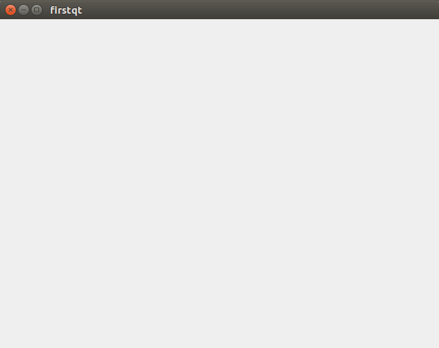

三、Qt窗口
1. 第一个Qt窗口
1
2
3
4
5
6
7
8
9
10
11
12 | #include <QApplication>
#include <QWidget>
int main(int argc,char *argv[]){
//创建QApplication
QApplication app(argc,argv);
//创建窗口
QWidget w;
//显示窗口
w.show();
return QApplication::exec();
}
|
Qt窗口的创建和PyQt类似
QApplication是Qt程序
QWidget是Qt的窗口控件
运行程序：

2. 标准Qt窗口
一个Qt程序中通常会有多个窗口，可以将每一个窗口提取一个窗口类，使代码更加清晰
下面演示窗口类的提取：
1、创建MainWindow.h头文件
| #ifndef QT_MAINWINDOW_H
#define QT_MAINWINDOW_H
#include <QWidget>
class MainWindow: public QWidget {
public:
MainWindow(QWidget* parent = Q_NULLPTR);
~MainWindow();
};
#endif //QT_MAINWINDOW_H
|
窗口继承自Qwidget
2、创建MainWindow.cpp文件
| #include "MainWindow.h"
MainWindow::MainWindow(QWidget* parent):QWidget(parent) {
}
MainWindow::~MainWindow() {
}
|
3、在程序入口main.cpp中创建窗口
1
2
3
4
5
6
7
8
9
10
11
12
13 | #include <iostream>
#include <QApplication>
#include "MainWindow.h"
using namespace std;
int main(int argc,char *argv[]){
QApplication app(argc,argv);
//创建窗口
MainWindow w;
//展示窗口
w.show();
return QApplication::exec();
}
|
提取窗口对象的好处是，每一个窗口中的逻辑都定义在自己类中
不会产生相互影响，使代码更加清晰明了